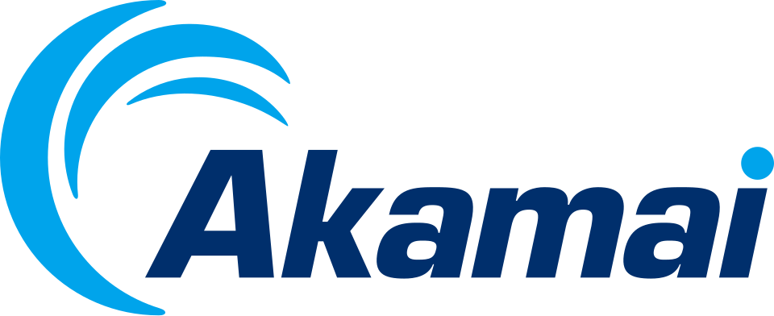

아카마이 테크놀로지스 Akamai Technologies
아카마이 테크놀로지스(Akamai Technologies)는 분산 컴퓨팅과 클라우드 컴퓨팅을 바탕으로 웹 가속, 보안, 스트리밍 서비스를 제공하는 미국의 B2B 기술 기업이다.
최종 업데이트

아카마이 테크놀로지스는 어떤 브랜드인가
아카마이 테크놀로지스는 어떻게 시작되고 성장했나
아카마이 테크놀로지스는 1998년 F. Thomson Leighton, Daniel Lewin, Randall Kaplan이 설립했다.
Thomson Leighton과 Daniel Lewin은 MIT 출신이며, 창업 당시 교내에서 하와이어가 유행하던 흐름을 따라 회사 이름을 정했다. ‘아카마이’는 하와이어로 ‘똑똑하다’는 뜻이지만 회사와 하와이의 연고를 나타내는 이름이 아니라 당시 교내 유행을 반영한 명칭이다.
공동창업자 Daniel Lewin은 9·11 테러 당시 아메리칸 항공 11편에 탑승했다가 31세에 사망했다.
아카마이 테크놀로지스의 브랜드 아이덴티티는 무엇인가
접속자와 가까운 분산 서버에서 캐시 콘텐츠를 전달해 고객사 원 서버의 부담을 줄이는 대규모 서버망이 핵심적인 구분점이다.
아카마이 테크놀로지스의 대표 제품과 서비스는 무엇인가
아카마이 테크놀로지스의 핵심 사업은 기업 고객의 웹 서버 앞에 분산형 리버스 프락시 서버를 배치하고 콘텐츠를 캐시하는 서비스이다. 고객사 서버의 콘텐츠를 각지의 아카마이 서버에 복사하고 접속자와 가까운 서버에서 전송해 원 서버의 부담을 줄인다.
이 분산 서버망을 기반으로 웹 가속 서비스와 보안 서비스, 웹 기반 스트리밍 서비스를 제공한다. 서비스는 인터넷 환경에서 클라우드 기반으로 제공되며 대중 매체와 IT 기업 등 여러 고객사가 캐시 서버를 이용한다.
아카마이 테크놀로지스는 지금 어떤 상태인가
아카마이 테크놀로지스는 미국 기업이며 본사는 케임브리지이다. 서버망은 130개국에 분산 설치된 23만 대 이상의 서버로 구성된다.
전 세계 인터넷 트래픽의 평균 20% 정도를 이 서버망을 통해 처리한다.
아카마이 테크놀로지스 로고는 어떻게 변해왔나
자주 묻는 질문
아카마이 테크놀로지스는 어느 나라 브랜드인가요?
아카마이 테크놀로지스는 미국의 기술·전자 브랜드입니다.
아카마이 테크놀로지스는 언제 설립되었나요?
아카마이 테크놀로지스는 1998년 설립되었습니다.
아카마이 테크놀로지스의 브랜드 아이덴티티는 무엇인가요?
접속자와 가까운 분산 서버에서 캐시 콘텐츠를 전달해 고객사 원 서버의 부담을 줄이는 대규모 서버망이 핵심적인 구분점이다.
아카마이 테크놀로지스의 대표 제품은 무엇인가요?
아카마이 테크놀로지스의 핵심 사업은 기업 고객의 웹 서버 앞에 분산형 리버스 프락시 서버를 배치하고 콘텐츠를 캐시하는 서비스이다.
아카마이 테크놀로지스는 현재 어떤 상태인가요?
아카마이 테크놀로지스는 미국 기업이며 본사는 케임브리지이다.
아카마이 테크놀로지스의 창업자는 누구인가요?
아카마이 테크놀로지스의 창업자는 F. Thomson Leighton, Daniel Lewin, Randall Kaplan입니다(위키데이터 기준).
아카마이 테크놀로지스의 본사는 어디에 있나요?
아카마이 테크놀로지스의 본사는 케임브리지에 있습니다(위키데이터 기준).
출처와 검증
아카마이 테크놀로지스 관련 참고: 공식 웹사이트 · 위키데이터 Q415598 · 한국어 위키백과 · 영어 위키백과. 브랜드명은 한글과 원어를 함께 표기하되 데이터에 없는 표기는 만들지 않습니다. 기원 국가·설립연도는 검수된 정의문에서 확인된 값을 우선하고, 없을 때만 공식 웹사이트 URL이 일치하는 위키데이터 개체의 값을 씁니다. 위키데이터 값은 2026-09-12 기준입니다.